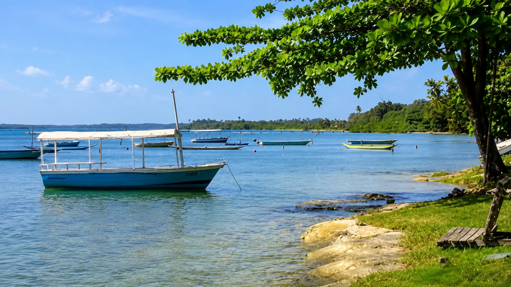
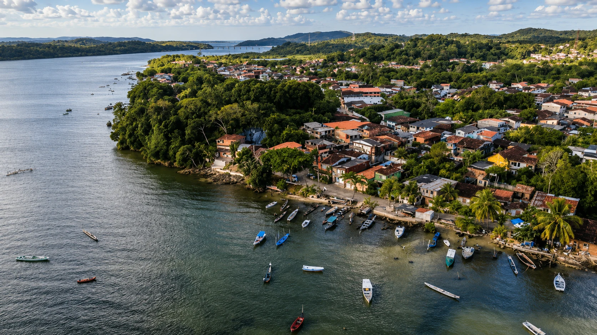
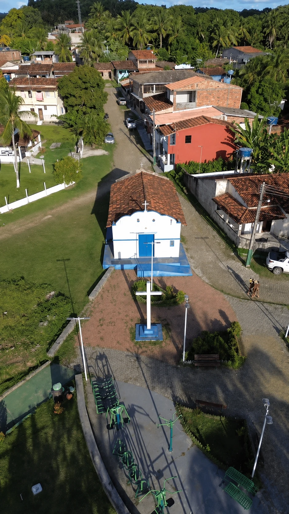
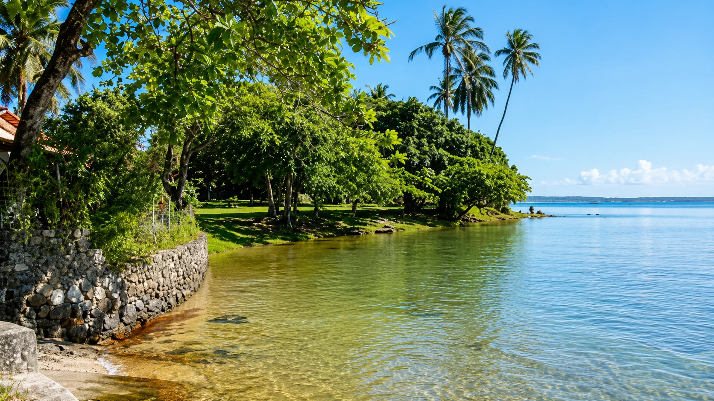
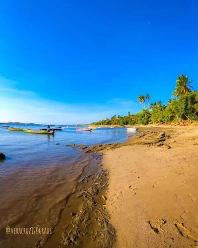
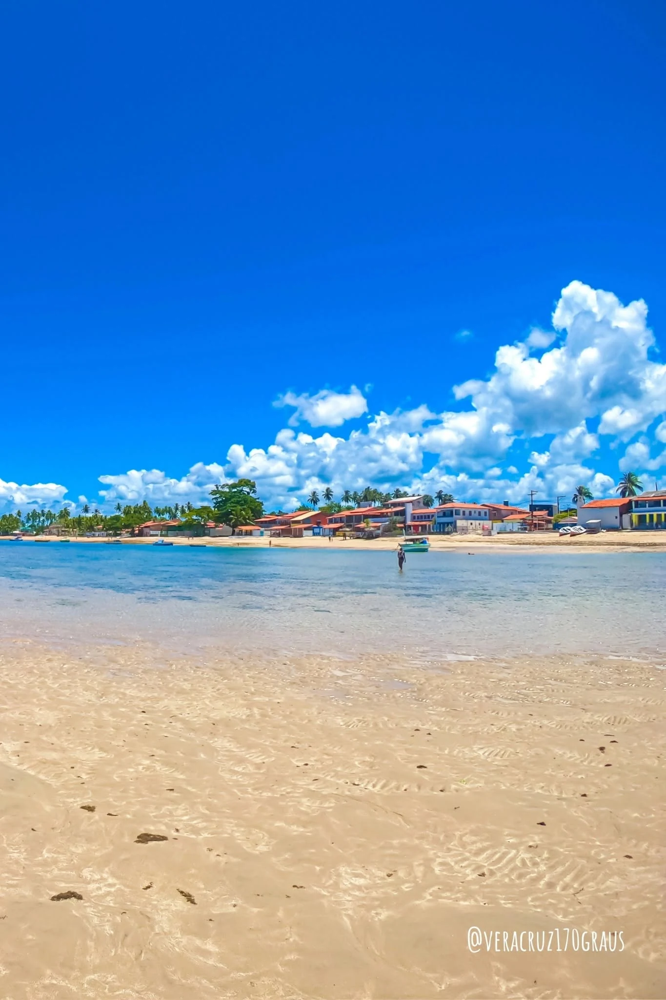
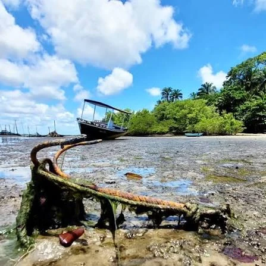

Vera Cruz · Ilha de Itaparica
Catu
Um povoado antigo, cercado por águas calmas, manguezais, memória comunitária e paisagens que parecem respirar no ritmo da maré.
Entre mar, mata e comunidade
01
02
03
Catu se conhece devagar
A comunidade combina moradias, pequenas embarcações, praias de águas calmas, trechos de manguezal e uma memória que conecta o presente à antiga Fazenda Santo Amaro do Catu.
Segundo relatos de moradores, essa antiga fazenda abrangia também a área onde hoje está Jiribatuba. Essa lembrança ajuda a explicar por que Catu é reconhecido localmente como um dos povoados mais antigos de Vera Cruz.
Território antigoMemória ligada à Fazenda Santo Amaro do Catu.
Vida costeiraBarcos, pesca, maré e caminhos à beira d’água.
Paisagem serenaÁguas mornas, tranquilas e protegidas.


Memória do território
Uma história ligada à Fazenda Santo Amaro do Catu
A história escrita de Catu ainda precisa de mais pesquisas, mas a memória dos moradores preserva pistas importantes sobre a formação do povoado.
De acordo com relatos locais, o território integrou a Fazenda Santo Amaro do Catu, região que também alcançava a atual Jiribatuba. Com o passar do tempo, a comunidade se consolidou em torno da vida rural, da pesca, da mariscagem, das relações de vizinhança e do uso cotidiano das margens.
Hoje, Catu reúne áreas residenciais, praias, rios, manguezais e lugares lembrados por diferentes gerações, formando uma história que continua sendo contada pela paisagem e pela oralidade.
Por que o nome Catu?
Origem indígenaO topônimo preserva uma palavra associada a qualidades positivas.
Memória da fazendaO nome aparece na antiga Fazenda Santo Amaro do Catu.
Identidade atualHoje, Catu representa pertencimento, natureza e comunidade.
Um nome indígena que atravessou o tempo
O termo catu é geralmente associado, em interpretações de origem tupi, às ideias de “bom”, “bonito” ou “agradável”.
Na comunidade, o nome também permanece ligado à antiga Fazenda Santo Amaro do Catu. Assim, ele reúne duas camadas de memória: a permanência de um vocabulário indígena no território e a história da ocupação rural da localidade.

Praia do Calado
Um trecho pouco movimentado, conhecido pelas águas tranquilas, pela vegetação e por histórias que atravessam gerações.

Segundo a tradição oral, o nome “Calado” surgiu porque o local era discreto e silencioso, procurado antigamente por casais que desejavam conversar ou namorar longe do movimento.
A praia integra o loteamento Paraíso do Mar e é lembrada pela atmosfera tranquila. Suas águas costumam ser mornas e sem ondas fortes, o que transforma o lugar em um cenário de descanso e contemplação.
“Calado” não fala apenas do silêncio. Fala de um lugar reservado que entrou na memória afetiva dos moradores.
Água doce junto ao mar
As fontes hidrominerais do Calado
Na areia da Praia do Calado, moradores identificam pontos onde brota água doce, fria e procurada para consumo.
O relato local menciona duas manilhas, também chamadas por algumas pessoas de cisternas. A água é valorizada por quem acredita em suas propriedades terapêuticas e faz parte das curiosidades mais conhecidas da região.
Divulgações comunitárias também contam que as fontes já despertaram a curiosidade de visitantes conhecidos. Esse aspecto deve ser apresentado como memória e relato local, sem substituir análises técnicas sobre a composição da água.

Natureza que sustenta a comunidade
O território costeiro inclui áreas de manguezal e recebe a influência do Rio Arú, próximo ao Calado, e do Rio Sobrado, na região de Vila Rica.
Rio Arú
Relaciona-se à paisagem da Praia do Calado e aos ambientes úmidos da região.
Rio Sobrado
Influencia a área do loteamento Vila Rica e ajuda a compor a diversidade local.
Manguezal
Funciona como abrigo e berçário para espécies, protegendo margens e sustentando atividades tradicionais.

Detalhes que ajudam a entender o lugar
Três trechos costeiros
Catu (sede), Calado e Vila Rica formam a área costeira mencionada pelos moradores.
Águas mais abrigadas
A paisagem é conhecida por águas calmas, mornas e com pouca formação de ondas.
Memória da fazenda
A Fazenda Santo Amaro do Catu permanece como referência para explicar a antiguidade do povoado.
Calado é nome e narrativa
A origem do nome da praia é preservada pela tradição oral dos moradores.
Fontes na areia
As manilhas de água doce são um dos elementos mais curiosos da Praia do Calado.
Turismo de respeito
Visitar Catu também significa respeitar áreas de moradia, pesca, mangue e circulação comunitária.
Paisagem em movimento
Veja Catu em vídeo
O vídeo reúne ângulos da comunidade e ajuda a perceber a relação entre barcos, casas, vegetação e maré.
Águas, comunidade e paisagem
Clique nas fotografias para ampliar.
Algumas fotografias foram compartilhadas com a marca @veracruz170graus. A autoria deve ser mantida quando indicada na própria imagem.
Conecta Vera Cruz · Memória coletiva
Vozes de Catu
Compartilhe uma história, curiosidade ou lembrança sobre Catu, Calado ou Vila Rica.
Compartilhe uma memória
0 de 500
Evite divulgar telefone, endereço ou outros dados pessoais.
Mural da comunidade
0 publicaçõesMemórias compartilhadas
Fontes da página
Pesquisa, relatos e imagens
O conteúdo reúne informações fornecidas para o projeto, relatos de moradores e registros visuais da comunidade.
- Relatos sobre a Fazenda Santo Amaro do Catu e a formação histórica do povoado.
- Informações comunitárias sobre Catu, Praia do Calado e Vila Rica.
- Relatos sobre as fontes de água na areia, o Rio Arú e o Rio Sobrado.
- Registros fotográficos e vídeo fornecidos ao projeto Conecta Vera Cruz.